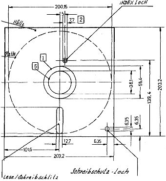

80-Bus Journal |
Okt./Nov./Dezember 1984 · Ausgabe 4 |
Zeitdiagramm ERASE ENABLE
Was die Disketten angeht, so hatte ich zunächst große Schwierigkeiten, bis ich herausfand, daß nur einseitige Standard-Disketten funktionieren, da die doppelseitigen das Indexloch an einer ganz anderen Stelle haben.

Das Schreibschutzloch hat auch seine Tücken, denn das Abkleben ermöglicht erst das Schreiben; genau umgekehrt wie die gewohnte Behandlung meiner 5 Zoll Disketten.
Nun habe ich mit dem Testprogramm einigermaßen experimentiert, und das Schreiben und Lesen scheint einwandfrei zu funktionieren. Schwierigkeiten tauchen hoffentlich nicht mehr auf.
Falls Sie 8 Zoll Disketten an die Redaktion einschicken, achten Sie bitte auf obigen Diskettentyp, sonst ist die ganze Kompatibilität wieder im Eimer.
Als Nascom1 und N2 Besitzer nehmen bei mir die Probleme langsam aber sicher Überhand. Den N2, den ich zur Zeit benutze, habe ich als Bausatz mit ZEAP2.0, BASIC und 10K stat. RAM gekauft. Doch langsam reicht mir der Speicherplatz nicht mehr, insbesondere seit ich mit Herrn Olbrich aus Berlin engen Briefkontakt pflege, angeregt durch seinen CASMON. Seitdem habe ich eine Elektor-64K-dy. RAM- Karte und die im Journal veröffentlichte Schaltung von Christian Peter nachgebaut – leider ohne anhaltenden Erfolg. Nach mehr als vierwöchiger Fehlersuche und Rückfragen bei Herrn Peter gab ich das Selbstbauen auf und bestellte mir die 64/256K-RAM-Karte von Janich+Klass, zu deren Fertigstellung mir nur noch ein IC fehlt. Ich gehe jedoch davon aus, daß diese Karte einwandfrei läuft.
Nun endlich zum eigentlichen Problem: Herr Peter überließ mir freundlicherweise eine alte 32K-RAM-Karte von Lampson Digitaltechnik. Leider jedoch ist es mir nicht gelungen, irgendwo Schaltungsunterlagen über die Karte zu bekommen. Da ich in der Nähe von Lampson wohne, fragte ich auch dort erfolglos nach.
Vielleicht könnte mir ein Leser des Journals die oben genannten Unterlagen schicken? Ich wurde mich sehr darüber freuen, da ich hier die letzte Möglichkeit sehe, die Unterlagen zu erhalten.
Ein weiteres Problem ist mein NASDIS- Disassembler. Aus unerfindlichen Gründen stürzt er oft ab. Zuerst schob ich es auf das fehlerhafte Arbeiten meiner RAM-Karte, aber denn hörte ich von Herrn Olbrich, daß er die gleichen Schwierigkeiten hat. Vielleicht hat ein anderer Leser ähnliche Erfahrungen gemacht oder davon gehört (gibt es für den Nascom eigentlich auch einen anderen Disassembler)?
Und noch ein Malheur: Nachdem ich nach fünf Stunden Hexdump eintippen das Spiel Starwars von Heft 2/84 starten wollte, stellte ich fest, daß innerhalb der ersten 200 Bytes mehrfach Sprünge und Calls in die Gegend von 5000H führen, wo die CPU natürlich in den Wald läuft. Offensichtlich ist Herrn Mayer-Gürr da ein Mißgeschick passiert. Vielleicht ist es noch möglich, die Korrekturen in Heft Nr 4 zu veröffentlichen.
Abschließend möchte ich noch ein paar Worte zum 80-BUS Journal verlieren. Ich freue mich sehr über die Zeitschrift speziell für meinen Computer. Schade, daß jedes Jahr aufs neue um den Fortbestand des Journals gebangt werden muß.
Einige Anregungen möchte ich jedoch noch geben. Im Beitrag Nascalc wurden die Arithmetikroutinen im BASIC-ROM erwähnt – aber eben nur erwähnt. Ein Bericht, der diese Routinen allen Lesern zur Verfügung stellt, mit Erläuterungen, wäre durchaus wünschenswert. Auch ein paar Informationen über die grundlegenden Arbeitsweisen von Nassys, ZEAP, NASDIS und BASIC sind für den reinen
| Seite 14 von 52 |
|---|